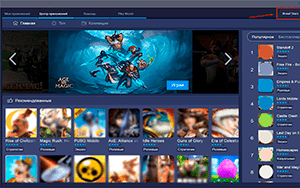

| Категория: | Эмуляторы | |
| Поддерживаемые ОС: | Windows all | |
| Разрядность: | 32 bit, 64 bit, x32, x64 | |
| Для устройств: | Компьютер | |
| Язык интерфейса: | на Русском | |
| Версия: | Четвертая | |
| Разработчик: | BlueStacks |
Платформа Android предоставляет пользователям огромные возможности, но она работает на мобильных телефонах, планшетах, иногда — на некоторых компьютерах или ноутбуках. Тем не менее, получить доступ можно, если использовать Bluestacks 4 для Windows.
 |
 |
 |
{kind=link}
Bluestacks 4 на компьютер
Приложение под самую популярную операционную систему — это эмулятор. Сам принцип такого рода программ основывается на том, что они имитируют определенную среду и ее алгоритмы. Bluestacks 4 создает на Windows виртуальную оболочку Android, и, следовательно, у вас появляется возможность скачивать любые приложения из Google Play, изначально адаптированные для соответствующей ОС. Они не будут работать просто под Windows, но, если использовать Bluestacks 4, функционал останется полноценным. При этом управление будет намного более удобным, особенно, если вы привыкли работать мышкой, а не пальцами, как это происходит на большинстве гаджетов с сенсорным управлением.

Bluestacks 4 — достаточно нетребовательная виртуальная платформа, ей хватит одноядерного процессора. Она прекрасно себя чувствует под любой ОС Windows, начиная от седьмой версии, заканчивая современной одиннадцатой. Если говорить о запросах под оперативную память, то они не превышают аналогичные у обычного современного смартфона или планшета, вполне ограничиваясь вполне скромными 2 Гб. Жесткий диск также потребуется небольшой: Bluestacks 4 займет 4 Гб (без учета приложений, которые вы планируете скачивать в виде apk-файлов или напрямую через GooglePlay). То есть важно учитывать еще некоторый объем памяти на носителе — он довольно небольшой, ведь программы под Android не слишком габаритные. Кроме того, вам наверняка потребуется обновить драйверы на видеокарте.
Блюстакс для версий windows:
Скачать Bluestacks 4 бесплатно
| Приложение | OS | Распаковщик | Формат | Версия | Загрузка |
|---|---|---|---|---|---|
| Bluestacks 4 (Блюстакс 4) | Windows All | OpenBox | x64 | Бесплатно (на русском) | |
| Bluestacks 4 (Блюстакс 4) | Windows All | OpenBox | x32 | Бесплатно (на русском) |
Как установить Bluestacks 4:
Запустите установочный файл.

Ознакомьтесь с информацией и нажмите «Далее».
Нажмите «Далее», или снимите галочки с рекомендуемого ПО и нажмите «Далее». Если снять все галочки, рекомендуемое ПО не установится!
После всех шагов нажмите «Установить».
Установка Блюстакс 4 довольно простая и не потребует узкопрофильных знаний. Вам понадобится скачать файл весом примерно 450 Мб — это немного, если у вас не лимитировано интернет-подключение. Далее запускайте загруженный файл и внимательно следуйте инструкциям, которые будут предлагаться со стороны мастера-установщика. Также потребуется немного подождать, пока приложение закачает недостающие данные. Обычно установка занимает 5-10 минут, что зависит от скорости передачи данных.
лутший
круто
почему-то интернет есть а он не загружается
у меня виндовс 10 но когда я скачиваю приложения через гугл плей в блюстаксе приложения очень долго скачиваются и не открываются
да я буду играть тут в со2
класнная приложение
а на виндовс 7 32 ьита и без виртуализации сработает?
блюстакс 5 такая параша ниче не работает